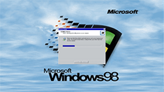
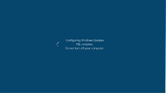
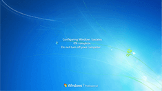
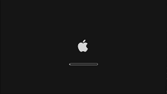
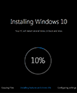
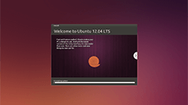

fakewindowsupdate.com www.fakewindowsupdate.com fakeupdate.co.uk www.fakeupdate.co.uk
Fake Windows Update Screens
Prank your friends and collagues with fake update screens!
Press F11 to go fullscreen
Press ENTER to cause a BSOD
Video Overview






Select a theme
Select Language
English
Pусский
Français
Espanol
Deutsch
Italian
Nederlandse
Português
Türkçe
Suomi
Dansk
Polski
Slovak
Magyar
Український
עִברִית
العربية
한국어
简体中文
正體中文
Galega
Bahasa Indonesia
Tiếng Việt
| Help Translate
| Stats
Tweet
We rely on ads to host this site and make other neat projects, please consider whitelisting it if you like it! :)